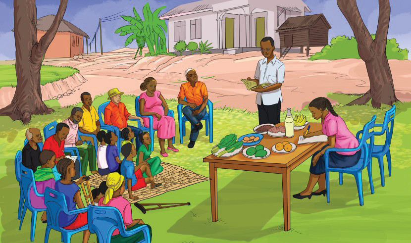

Provision of nutrition education
It is important for individuals or communities to be provided with information and knowledge about nutrition, dietary habits and the importance of a balanced diet. Nutrition education aims to promote healthy eating habits, improve overall health, prevent diet-related illnesses and encourage good food choices. Involving family members in nutrition education can enhance understanding and management of eating disorders. Nutrition education can be provided in communities, schools and health facilities by nutritionists. However, peer group educators are also effective. Media such as television, radio, posters, fliers and social networks can be used to create nutrition awareness. Figure 7.3 shows community members receiving nutrition education.


Activity 7.2
Preventing anorexia nervosa
You have been appointed to provide nutritional education on the prevention and control of anorexia nervosa to your fellow students.
(i) Describe the mechanisms for preventing and controlling anorexia nervosa that you will present to them.
(ii) Explain the common cause of this disorder.